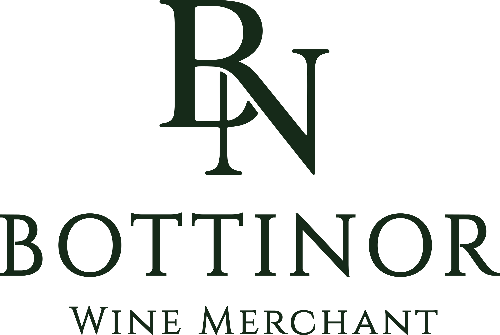
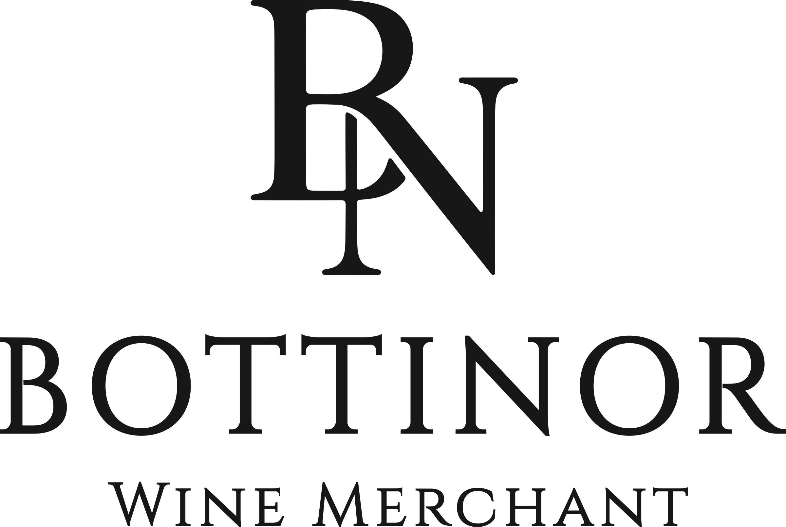
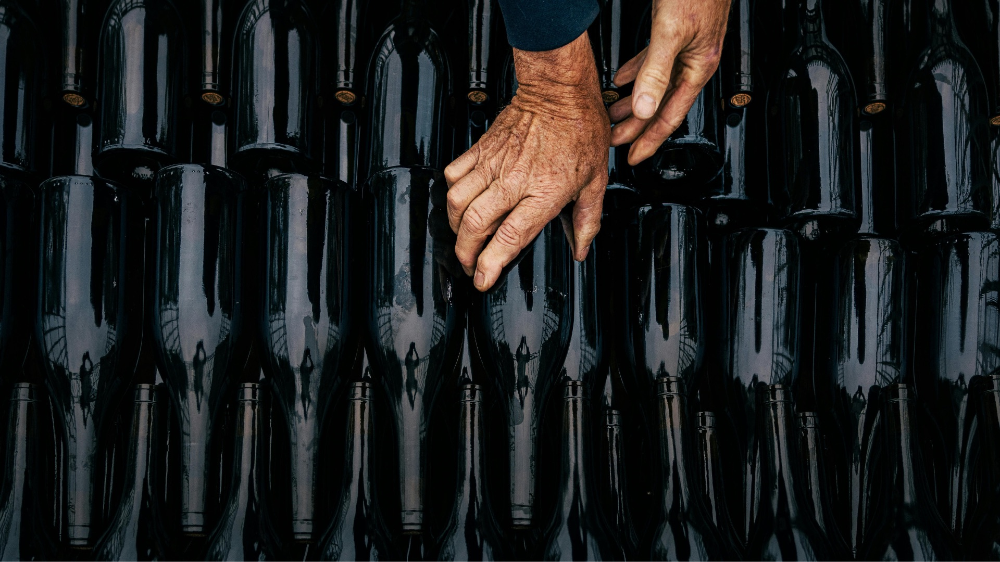
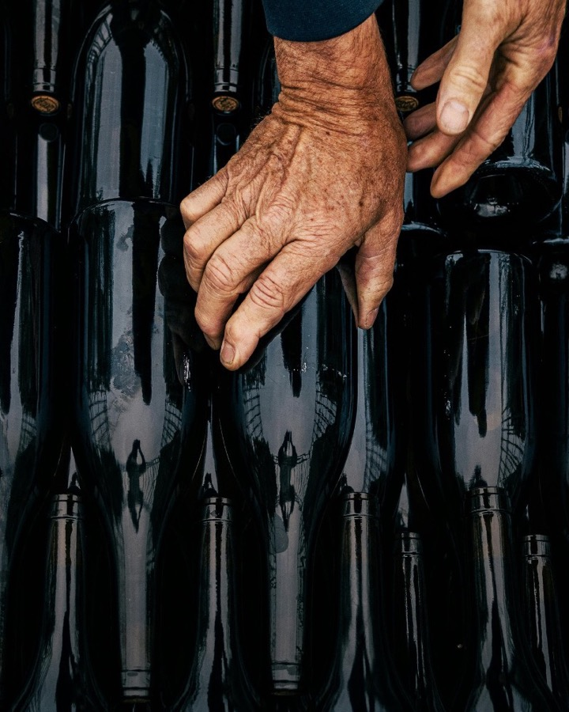

An extension of your winery in Norway.
The colours, type, logo rules and components behind the Bottinor website. Everything here is a theme of the shared Belmonte Beverage Group frontend: the same components as the other brands, styled for Bottinor.
How this fits together
The Website Brand Essentials (September 2026) own the brand: logo, palette, typefaces and tone. This page turns them into web rules and shows each one working in the components of the site.
Brand Essentials
Logo artwork, the 12-colour palette and the Newsreader + Manrope pairing. Where this page and the brandbook disagree, the brandbook wins.
Style, not structure
Bottinor reuses the existing BBG components and CMS content. Only colours, type, spacing and small interaction details change.
Prototype
Sample wines, producers and articles; illustrations stand in for photography until real images are delivered.
Committed to your wines. Focused on Norway.
Bottinor represents partner wineries with the commitment of their own team. The voice is personal and informed: it explains our role and shows commitment through specific actions, useful advice and dependable follow-up.
- First: international producers looking for representation in Norway
- Also: Norwegian hospitality professionals
- Clear and specific, no hype
- “We” for Bottinor, “your winery” for the reader
- Show the work: tenders, follow-up, reporting
Logo
Use the original artwork in one colour on a calm background. Keep “Wine Merchant” with the full logo and the wordmark.

Full logo · Bottle Green
Full logo · Greige
Full logo · InkClear space and size
Clear space: height of the capital B
Clear space: height of the capital B
Clear space: ¼ of the monogram height
Starting values from the brandbook; increase the logo if “Wine Merchant” becomes hard to read. On the site, the header uses the wordmark (168 px) with the Belmonte group logo on the left, as on the other BBG brands.
- Greige artwork on Bottle Green or dark photography
- Bottle Green or Ink artwork on Greige and Ivory
- Measure clear space from the artwork edge
- Stretch, rotate or redraw the logo
- Add shadows, outlines or gradients
- Place Greige artwork on light backgrounds
Colour
Greige and Bottle Green carry the identity. Ivory adds warmth, Ink provides clarity. Supporting colours are for editorial accents and illustration, and stay secondary to Bottle Green and the light neutrals.
Primary
Supporting
Approved pairings
Contrast ratios are calculated live from the tokens. Body text needs at least 4.5:1 (WCAG AA); large headings at least 3:1.
Typography
Newsreader for character and storytelling. Manrope for structure and useful information. Both include Norwegian characters and load from Google Fonts.
An extension of your winery in Norway.
Æ Ø Å æ ø å · Crémant · Sémillon · 0123456789
Your values, identity and ambitions guide how we represent your wines.
Æ Ø Å æ ø å · Crémant · Sémillon · 0123456789
Type scale
| Token | Sample | Desktop / mobile | Used for |
|---|---|---|---|
--bottinor-display | Bottinor | 72 / 40 px | Banner, producer and article titles |
--bottinor-h1 | Our selection | 64 / 36 px | Page titles, product name |
--bottinor-h2 | Market notes | 44 / 28 px | Quote, newsletter title |
--bottinor-h3 | Start with the winery. | 32 / 22 px | Intro lead, paragraph headings |
--bottinor-large | Tenuta Ca’ del Vento | 26 / 20 px | Producer list, characteristics |
--bottinor-medium | Barolo del Comune di La Morra 2020 | 21 / 17 px | Tile names, prices |
--bottinor-body | We commit the time, energy and attention needed. | 17 px · 1.6 | Body copy (Manrope 400) |
--bottinor-small | Read more | 15 px | Links, buttons, nav (Manrope 500–600) |
--bottinor-caption | Red | Italy | Piemonte | 0,75 L | 14,5 % | 12 px | Product key info, captions |
--bottinor-label | About the producer | 11 px · +0.16em | Uppercase labels and eyebrows |
Space & layout
Generous, calm spacing with hairline rules to separate content instead of boxes and shadows. Corners stay square.
| Rule | Value | Note |
|---|---|---|
| Hairlines | rgba(23,23,23,.16) on light, rgba(243,242,240,.22) on Bottle Green | Row dividers, counter tops, filter accordion |
| Radius | 0 | No rounded corners on cards, images or inputs |
| Shadow | none | Depth comes from Ivory surfaces and Bottle Green bands |
| Motion | cubic-bezier(.33, 0, .33, 1), 0.3–0.7 s | Same curve as --ease-in-out-belmonte; respects reduced motion |
Icons & illustration
Bottle Green linework with rounded endings and a consistent stroke. Simpler forms for small icons. A final vector library is a separate production step; these are the icons the components need.
Photography
Show the people, places and work behind the wines. Natural light, believable colour and real involvement. Producers keep their own logos, labels and photographs; Bottinor provides the framework.


Brand photo from the asset package. Producer, vineyard and portrait photography is still to be delivered; the prototype marks those places with illustrations.
Component library
Each preview is the Bottinor style of a component that already exists in the BBG frontend. The caption names the component in the code.
Links and labels
Product tile
Article tile and team member
Intro, quote and counter
“I want the producers I work with to feel that they have a colleague here.”Christoffer Bergsted, Founder
Filters and search
Type
Country
Product price and table
About the producer band
Newsletter
Theme implementation
How the tokens map to the BBG frontend. The full component-by-component list is in DESIGN.md.
| Bottinor token | App target | Value |
|---|---|---|
--bottinor-greige … --bottinor-rose-dust | :root + @theme in globals.css (bg-theme-*, text-theme-*) | 12 colours |
--bottinor-font-serif | font-bottinor (theme font) via src/fonts/index.ts | Newsreader 400/500 + italic |
--bottinor-font-sans | Bottinor replacement for font-global | Manrope 400/500/600 |
--bottinor-display | --font-display-clamp in [data-domain="bottinor"] | clamp(40px, 5.4vw, 72px) |
--bottinor-h1 | --font-header1-clamp | clamp(36px, 4.4vw, 64px) |
--bottinor-h2 | --font-header2-clamp | clamp(28px, 3.1vw, 44px) |
--bottinor-h3 | --font-header3-clamp | clamp(22px, 2.2vw, 32px) |
--bottinor-large / --bottinor-medium | --font-large-clamp / --font-medium-clamp | 26 / 21 px max |
| Logo | bottinor-brand.tsx in brand-renderer.tsx; group logo branch in logo-renderer.tsx | Needs SVG artwork |
What we still need
SVG logos
The SVG files in the delivered package were empty. Vector artwork is needed for the header, footer and favicon.
Photography
Producer, vineyard and team portraits. The prototype uses illustrations in their place.
Content
Real producers, wines and articles in Crystallize. All names, prices and numbers in the prototype are samples.